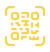

<!-- Logistics-->
<ion-footer *ngIf="app_access_logistic == 1 && app_access_bullion == 0">
  <ion-grid style="padding-top:0;">
    <ion-row class="footerbtn">
      <ion-col size="4" [ngClass]="current_url.includes('pickup')?'activebtn':'deactivebtn'">
          <ion-button expand="block" [routerLink]="['/pickup']" class="servicebtn" mode="ios">
               
               
              Pick Up</ion-button>
      </ion-col>
      <ion-col size="4">
        <ion-button expand="block" class="camerabtn" mode="ios" [routerLink]="['/scan']"><span class="btncamerabg"></span></ion-button>
      </ion-col>
      <ion-col size="4" [ngClass]="current_url.includes('delivery')?'activebtn':'deactivebtn'">
        <ion-button expand="block" [routerLink]="['/delivery']" class="requestbtn" mode="ios">
             
             
            Delivery</ion-button>
      </ion-col>
    </ion-row>
  </ion-grid>
</ion-footer>


<!-- Logistics and Bullion-->
<ion-footer *ngIf="app_access_logistic == 1 && app_access_bullion == 1">
  <ion-grid style="padding-top:0;">
    <ion-row class="footerbtn">
      <ion-col size="4" [ngClass]="current_url.includes('pickup')?'activebtn':'deactivebtn'">
          <ion-button expand="block" [routerLink]="['/pickup']" class="servicebtn" mode="ios">
               
               
              Logistics</ion-button>
      </ion-col>
      <ion-col size="4">
        <ion-button expand="block" class="camerabtn" mode="ios" [routerLink]="['/scan']"><span class="btncamerabg"></span></ion-button>
      </ion-col>
      <ion-col size="4" [ngClass]="current_url.includes('collection')?'activebtn':'deactivebtn'">
        <ion-button expand="block" [routerLink]="['/collection-supplier']" class="requestbtn" mode="ios">
             
             
            Bullion</ion-button>
      </ion-col>
    </ion-row>
  </ion-grid>
</ion-footer>

<!-- Bullion-->
<ion-fab vertical="bottom" horizontal="end" slot="fixed" *ngIf="app_access_logistic == 0 && app_access_bullion == 1">
    <div class="footerbtnv2">
        <ion-button expand="block" class="camerabtn" mode="ios" [routerLink]="['/collection']"><span class="btncamerabg"></span></ion-button>
    </div>
</ion-fab>